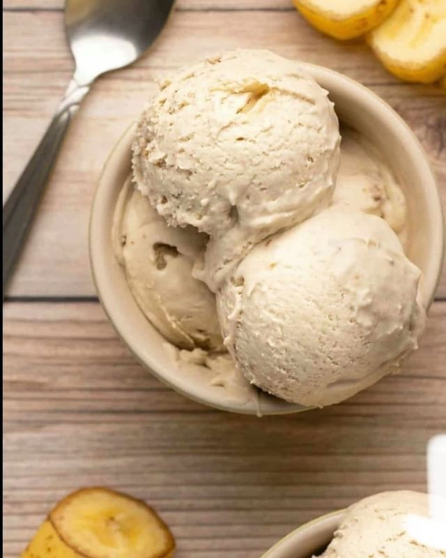

Ovocná zmrzlina podľa @byvanilka — Normy Jedál
Barunky boží, banánová, bez cukru, budeš jí milovat 🙈😍
🍌🍌 ❣️PROTEINOVÁ ZMRZKAA❣️ 🍌🍌
Tahle je tak easy a výborná, že to musím sdílet. Krásně sladká a plná bílkovin. 🤟🏽
100g mraženého banánu... (prostě tam dej nějaký banán 😆)
25g proteinového prášku.. (cca)
60g ricotty ..(mňaam)
Zmrzlý banán umixuj spolu s proteinem a ricottou a THAT'S IT 🙃🙃
Pro zmrzlinovější konzistenci, nech ještě chvilku v mrazáku.
#icecream #healthyfood #h#healthylifestyle #health #zmrzlina #homemade #homemadeicecream #domacizmrzlina #bananaicecream #recept #recipe #foodporn #yogi #yogapraha #joginka #zdravyzivotnistyl #zdravi #banana #banan #ovocnazmrzlina